ServiceOntario Online Renewals
Making renewals accessible and easy for Ontarians
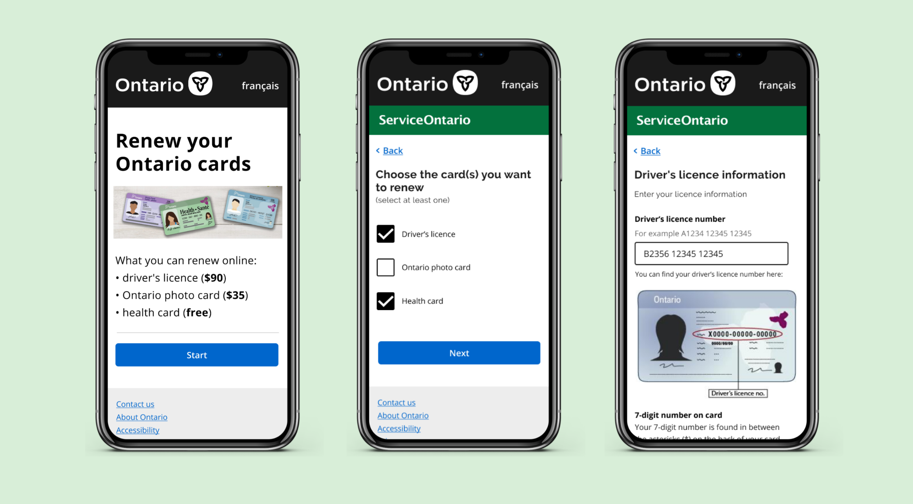
Timeline: January - February 2020 (6 weeks)
Role: Designer in a team of 6
Tools: Figma, Balsamiq, React.js
Skills: Product design, user testing
While at the Ontario Digital Service, I was a product designer working on a team of 6 to redesign Ontario’s online renewal platform for driver’s licences and health cards which is used by over 5 million people annually. We worked in 6 one-week sprints where we researched, designed, tested, and developed a platform that’s inclusive, efficient, and easy to use.
You can see the final coded prototype at sorenewals.firebaseapp.com or the final Figma design below.
discovering the problem
Analyzing over 1500 pieces of feedback from Ontarians
As a team, we had been told by subject matter experts that the current platform has problems, but we needed to research and truly understand the frustrations that Ontarians were having with the platform.
We looked toward the “Rate our Service” feedback form to empathize and as a starting point for our research. This is a database of over 1,593 comments that Ontarians submitted when using the service.
Our team sat down and analyzed each of the comments, categorized them, and identified the key pain points we wanted to focus on solving with our redesign. These themes included difficult finding the service, lack of accessibility, and puzzling interfaces.
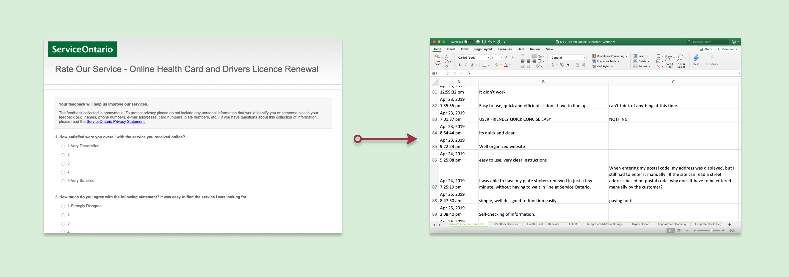
the problem
Facing barriers when using an “easier” service
Ontarians have to renew their driver’s licences and health cards every 5 years to continue driving and accessing the healthcare system.
The current online service to renew these products was meant to be an efficient alternative for the long and dreaded waits associated with the in-person process. Instead, from our initial research, we learned thousands of Ontarians are left frustrated with expiring products, and are forced to go in-person to a ServiceOntario centre. These frustrations with the online platform were due to three main reasons:
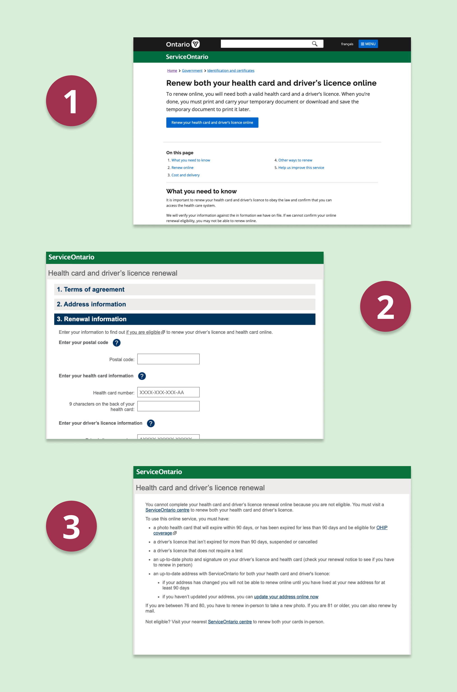
- It was difficult to find the correct service to renew their set of products.
- Ontarians were confused by the questions being asked and the redundancy of information being asked of them.
- When encountering a wall that prevents them from continuing the process, Ontarians could not figure out why, nor what to do next.
As such, the ServiceOntario renewal process is not meeting Ontarian’s needs,
causing low completion rates, negative user feedback, inclusion concerns and low uptake.
How might we redesign the online renewal platform to be a one-window transaction flow that promotes usability and inclusion by reducing time on task, and increasing positive feedback on eligibility?
more research
Understanding the existing user journey
Because our team was looking to redesign existing platforms, we needed to familiarize ourselves with the existing workflow and how Ontarians interact with the combined driver’s licence and health card renewal service, and the standalone driver’s licence renewal service.
The first thing we did was look at how Ontarians were accessing the platforms. We did a site audit where we traced how they might arrive at each one. Interestingly, this is when we realized that many of the entry points had contradicting call-to-actions that led to the unexpected service. As such, we made sure to remember clear entry points as part of our final design because right now, it’s really confusing.
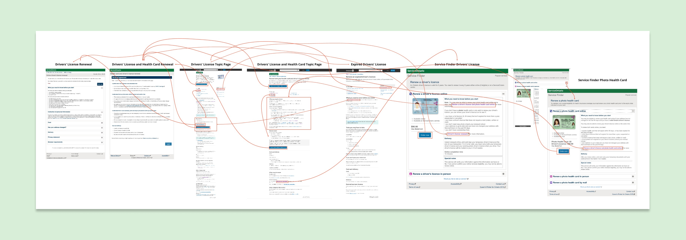
The next thing we did was analyze how Ontarians may be using these services and the circumstances they come from. Thus, we created four personas to see how diverse Ontarians and their situations can be when coming to our platform. We made sure to keep these possible scenarios in mind when redesigning the platform.
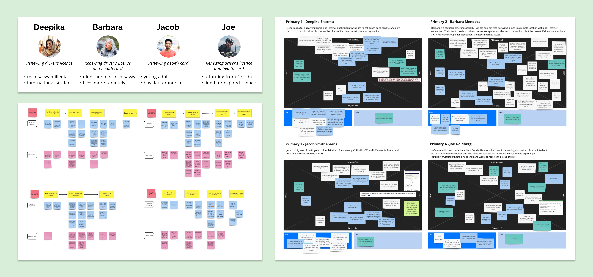
From there, I created an overall user journey map that outlines the possible actions that one can take during the renewal process. It helped us to break down the key parts of our current platform.
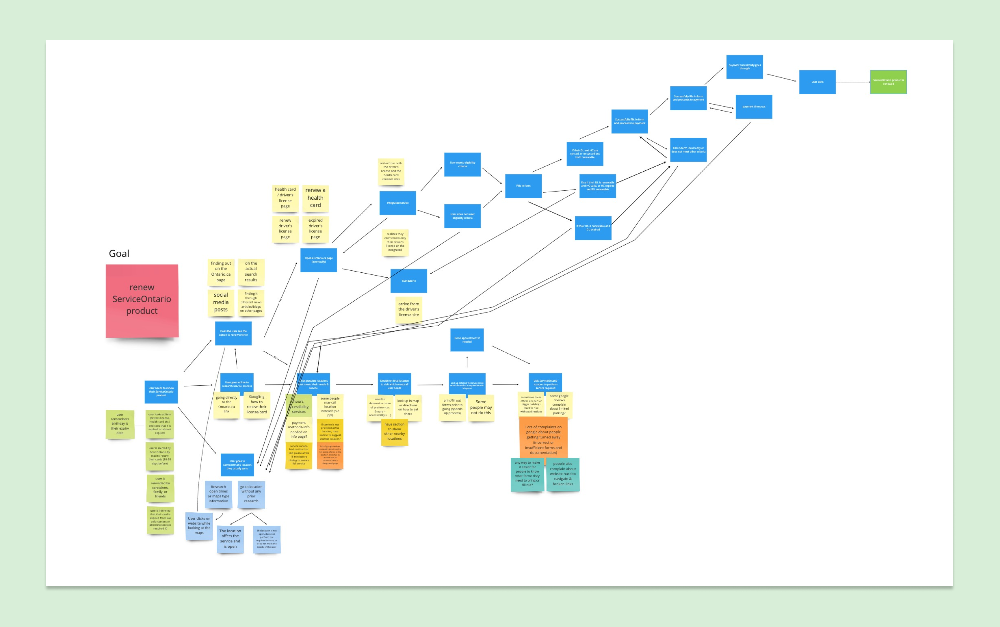
Having completed more research, we looked at other services that do similar renewal services for licences. This included online driver’s licence renewals in different jurisdictions such as Newfoundland and Labrador, Alberta, United Kingdom, Hong Kong, Virginia, Massachusetts, New Hampshire, and Pennsylvania, as well as other organizations such as the Alcohol and Gaming Commission of Ontario, and US Homeland Security. This helped curate a list of elements we liked in a renewal process and informed our decisions when redesigning ServiceOntario’s renewal platform.
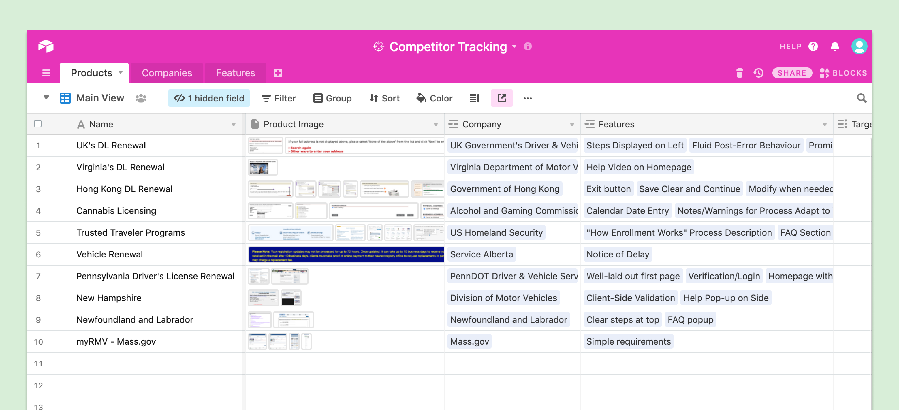
changing it up
Starting with the golden path
When we started ideating possible solutions, I quickly learned that designing for the public sector has different constraints than in the private sector. There is more of an emphasis on being accessible, policies that need to be taken into consideration, as well as maintaining branding as the government. These were all factors that I kept in mind as I was designing the service.
We explored a one window approach that consolidates all of the current services. It removes the confusion when Ontarians currently face when trying to find the correct service to renew their product, and allows them to renew everything at once.

Next, we developed a flow chart to map the high level process, taking advantage of common patterns to make the transaction process familiar and easy.
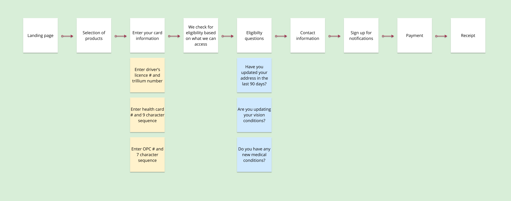
Because we were working quickly with one week sprints, we started prototyping the golden path where the user meets all of the requirements and doesn’t get stopped by an error along the way. For security reasons, Ontario identification has a lot of conditions that need to be met in order to renew online; thus, we mapped out the different possible paths with their complexities.
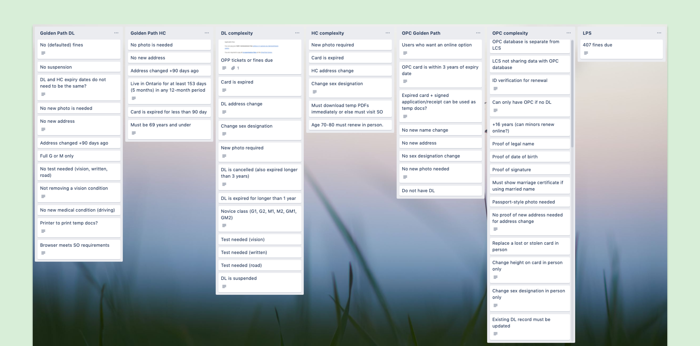
We started prototyping with a mobile-first approach. This allows for scalability and ensures that our design would work on all screen types.
For the first week, we started with Balsamiq to map the golden path of renewing both a driver’s licence and health card at the same time. During week two, we added the ability to renew driver’s licences and health cards individually. In week three, we migrated to Figma and worked on guiding Ontarians when they deviated from the golden path. In the final week, we tested a coded prototype that included the option to renew Ontario photo cards, too.
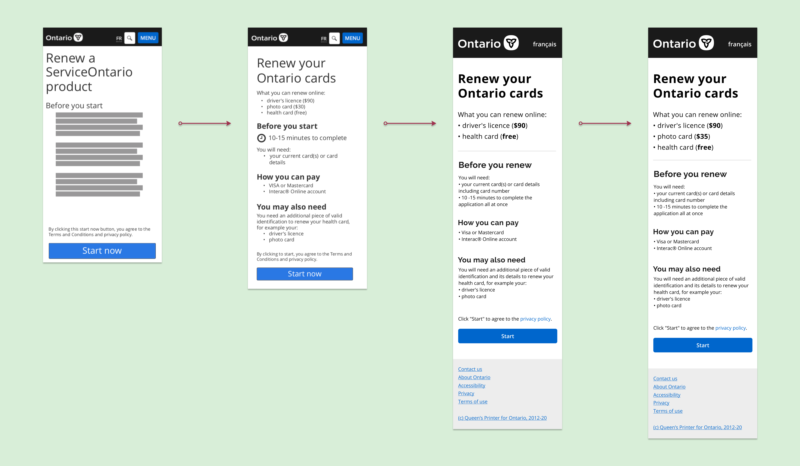
learning as we built
User testing at the busiest ServiceOntario location
Each week, we took what we were working on and tested it with Ontarians at the busiest ServiceOntario location in Toronto. We asked individuals who were renewing their driver’s licences, health cards, or both, to try out our redesigned platform.
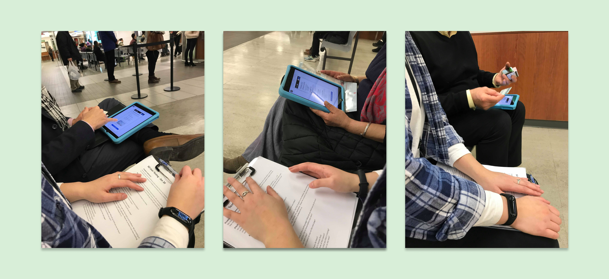
The people we talked to all had important and interesting feedback to give. Some of the main things we learned in the earlier weeks included:
- People wanted a brief overview of what to expect from the process.
- They were sometimes confused by the language that was being used, leaving them puzzled about what they needed to do.
- When encountering errors, Ontarians needed more explanation and next steps.
Hearing these concerns, it’s almost like we were back at square one with our initial problem. But after each session, the team got together to make changes and implement the feedback we had heard. Eventually, we validated our changes in the following guerilla user testing sessions.
One of the most notable changes we made was in our third week when we noticed Ontarians were getting frustrated when faced with an error late in the renewal process. We realized that we could help them “fail faster” so they can learn more quickly that they don’t qualify for renewing online and not waste time. We reversed part of our flow so the eligibility questions are earlier in the process rather than the end.
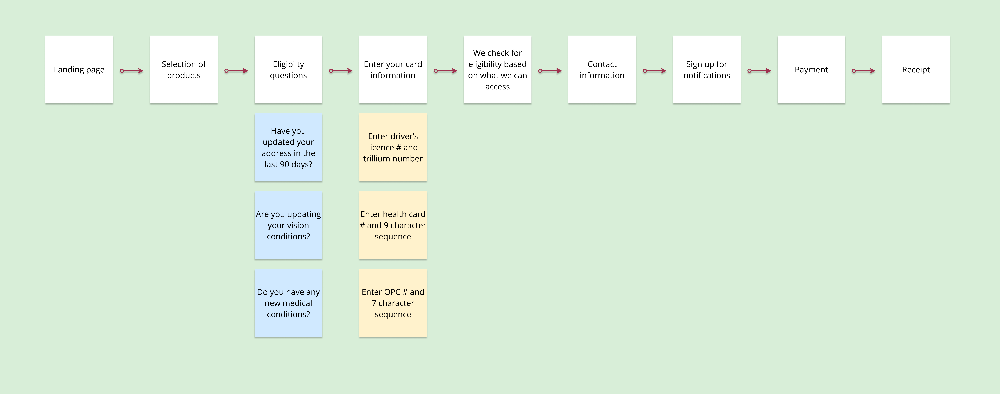
bringing it back now y'all
Implementing changes and finalizing the details
In our final sprint, we reflected on everything we learned, made changes based on user feedback, and finalized the loose ends.
We worked on breaking down the onboarding of the application into the bite sized pieces. As everyone knows and as Ontarians that we tested reiterated:
“Nobody reads the terms and conditions.”
But as a governmental service, it’s important for the user to understand all parts of the process and know what they are signing up for. So we broke down what used to a long, two screen onboarding process into 3 screens that end above the fold.

To help Ontarians further understand the process, we looked at revamping the copy and microcopy to be more instructional and personal. We included more directional words to instruct the user how to complete the steps. This also involved using pictures to aid people in completing the renewal easily.
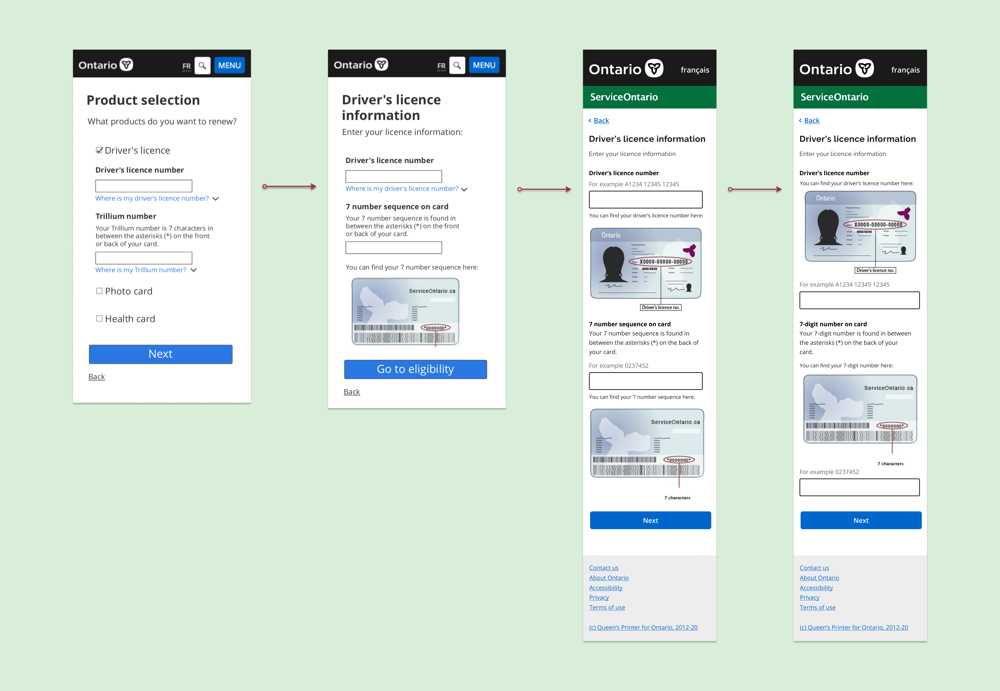
We also thought more about errors and the different barriers Ontarians may encounter when trying to renew their product. We thought about both human errors, as well as technical errors that Ontarians may encounter throughout the process.
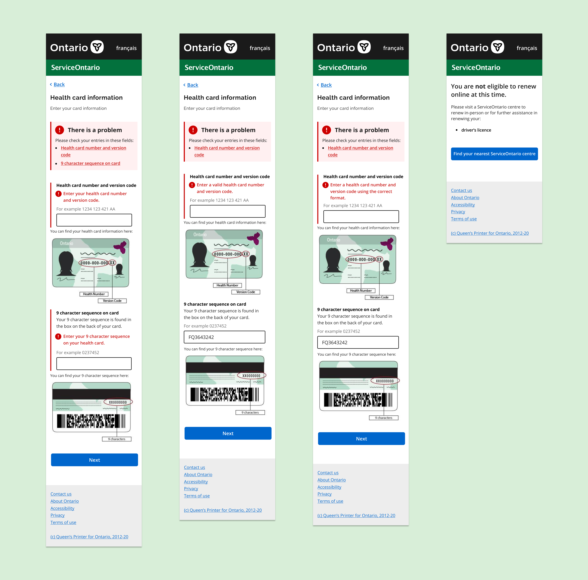
reflecting back
Designing for a service millions of people use
I learned a lot from completing this project. I had never completed a project of this scale and potential impact before. We were able to complete a lot in a short period of time that impacts many, many people – it was our first project of the term as well.
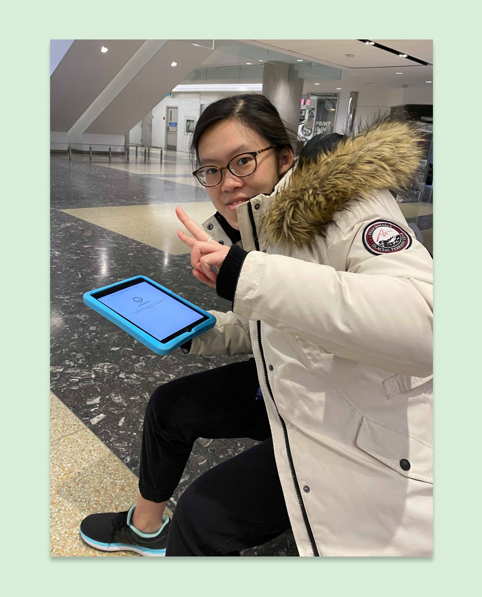
Having never done guerilla user testing before, I was extremely nervous the first time I was told to approach a stranger and ask for feedback. However, soon, I realized that these conversations helped me see the tangible fruits of how I am striving towards my goal of using technology to help people. I used this as a chance to overcome my anxieties when approaching and conducting user interviews with others.
Overall, I am proud of the work we have done and I hope to continue working on impactful projects in the future.